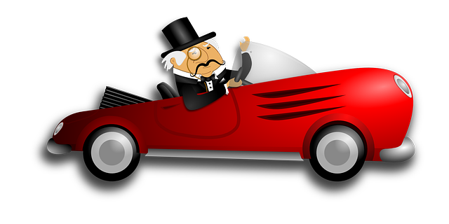

세상에는 늘 부자와 가난한 사람이 있어 왔습니다. 물질적 풍요를 누리는 부자를 보면서 질투를 느끼기 쉽습니다. 하지만 이러한 질투는 개인과 사회에도 해로운 영향을 미칠 수 있습니다. 이 글에서는 부자에 대한 질투가 왜 해롭고 비생산적인지에 대해 논의해보고자 합니다.
1. 정신 건강에 해롭다
부자를 질투할 때 우리는 종종 부정적인 감정을 품게 됩니다. 질투와 불만, 분노 같은 감정은 스트레스로 이어져 우리의 정신 건강에 해를 끼칩니다. 이러한 감정은 우리가 자아와 성장에 집중하는 것을 방해하며, 대인관계를 불안정하게 만들 수 있습니다.
2. 비생산적인 목표 설정
부자를 질투하면서 자신의 목표를 다른 사람과 비교하게 됩니다. 그 결과, 가치 있는 목표를 세우는 대신 물질적인 성공만을 추구할 가능성이 높아집니다. 이는 과거의 자아와 경쟁하며 성장하는 것이 아니라, 타인의 성공에 연연해지는 비생산적인 행동으로 이어집니다.
3. 도덕적 가치의 왜곡
부자를 질투할 때 우리는 종종 부의 출처와 과정을 무시하고 단지 그들이 가진 물질적인 풍요만을 집중해 봅니다. 이렇게 되면 자신의 가치를 결정하는 기준이 부의 양과 성공에만 국한되어 도덕적 가치의 왜곡이 발생합니다. 이는 사회 구성원 간 공감과 이해를 저해하며, 자기중심적이고 경쟁적인 세계관을 불러올 수 있습니다.
4. 사회적 분열과 갈등
부자에 대한 질투가 사회적으로 확산되면, 사회 간 분열과 갈등이 발생할 수 있습니다. 이는 경제적 불평등을 인식하는 것과는 별개로, 사회 간의 연대와 협력을 방해하며, 서로를 이해하고 지지하는 데 어려움을 초래합니다.
5. 성장의 기회를 놓칠 수 있다
부자를 질투하는 것은 자신의 개인적인 발전과 성장에 방해가 될 수 있습니다. 타인과 비교하는 대신, 자신의 목표와 가치에 집중해야 성장의 기회를 잡을 수 있습니다. 부자를 질투함으로써 자신의 능력과 잠재력을 제한하게 되면, 기회를 놓치게 되고 결국 더 나은 삶을 이루기 어려워질 수 있습니다.
6. 긍정적인 영감을 얻지 못한다
부자에 대한 질투는 우리가 그들의 성공에서 긍정적인 영감을 얻지 못하게 만듭니다. 성공한 사람들의 경험과 지식을 배우고 그들의 노력과 성공에 대한 존중을 표현할 수 있는 긍정적인 마음가짐을 갖는 것이 중요합니다. 이렇게 하면 자신의 발전과 성장에 도움이 되는 통찰력을 얻을 수 있습니다.
7. 부의 창조와 공유에 기여하지 못한다
부자를 질투하는 것은 부를 창조하고 공유하는 데 기여하는 긍정적인 행동을 저해합니다. 부자에게 배우고 협력하여 부를 늘리고 공유하는 것이 더 좋은 사회를 만드는 데 도움이 됩니다. 질투보다는 존중과 이해를 바탕으로 다양한 경험과 지식을 나누는 것이 경제적 발전과 사회적 번영에 이바지할 것입니다.
결론적으로, 부자를 질투하는 것은 우리 개인과 사회에 해로운 영향을 미칩니다. 이러한 질투는 정신 건강에 해롭고, 비생산적인 목표 설정, 도덕적 가치의 왜곡, 사회적 분열과 갈등, 성장의 기회를 놓치게 하는 등의 부정적인 결과를 초래합니다. 대신, 자신의 목표와 가치에 집중하고, 부자들의 성공에서 긍정적인 영감을 얻으며, 부의 창조와 공유에 기여하려는 마음가짐을 갖는 것이 중요합니다. 이를 통해 개인과 사회 모두에게 긍정적인 변화와 성장을 가져올 수 있습니다.